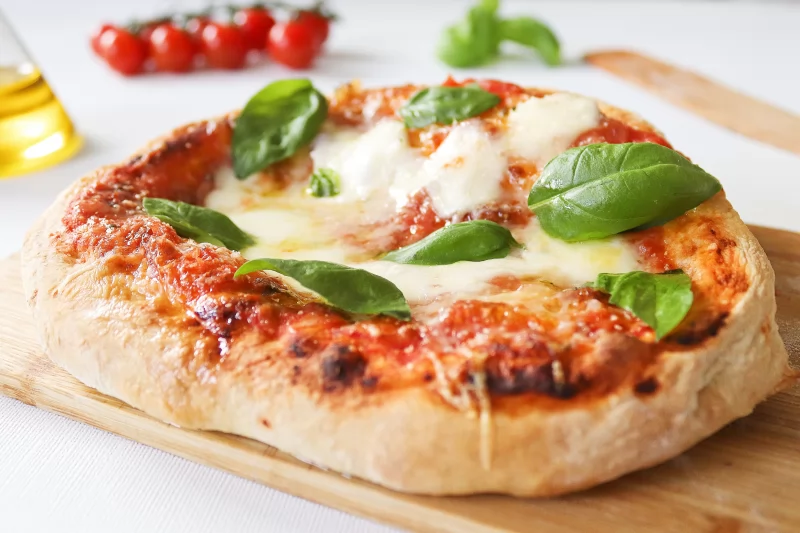

La pizza napolitana, con su masa fina y sus bordes elevados y crujientes, es la sencillez llevada a la exquisitez. Con esta receta, os enseñamos a hacerla en casa en su versión Margarita, ¡todo un clásico!
Las primeras pizzerías aparecieron en Nápoles allá por el siglo XIX y no fue hasta mediados del siglo XX cuando empezaron a abrirse locales donde degustar pizzas en otros lugares de Italia. Hoy en día, podemos encontrar pizzerías en cualquier rincón del mundo. En el año 2017, la pizza napolitana y el arte de los pizzaioli —los cocineros de las pizzas— son declarados patrimonio inmaterial de la humanidad.
Para la masa:
Para la pizza margarita: